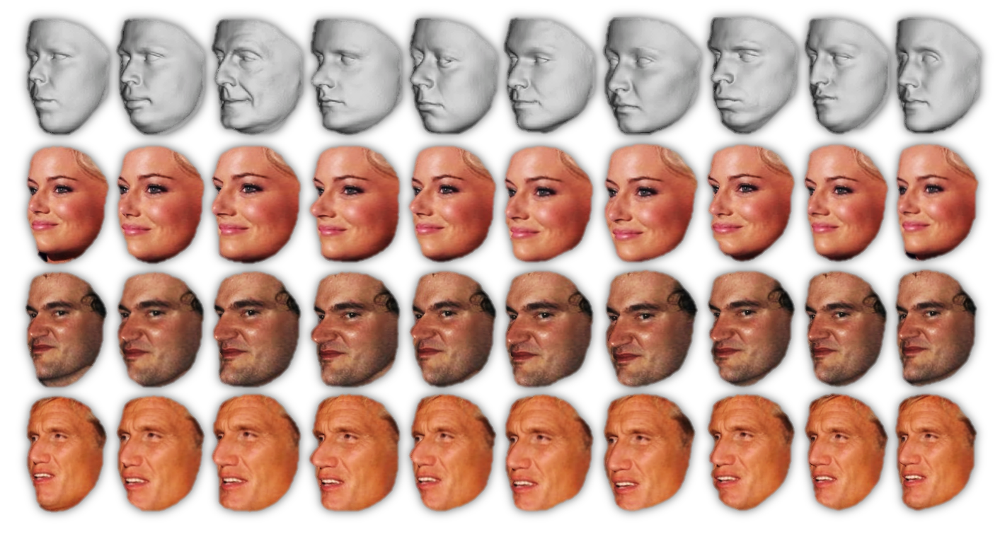

Do We Really Need to Collect Millions of Faces
for Effective Face Recognition?

Augmenting faces by using different generic 3D models for rendering.
Top: The ten generic 3D face shapes used for rendering. Bottom: Faces rendered with
the generic appearing right above them. Different shapes induce subtle appearance
variations yet do not change the perceived identity of the face in the image. A
single face image is rendered using different generic 3D models, at different poses
and different expressions (not shown here, see paper). This enriches the training
set with important intra-subject appearance variations thereby substantially improving
recognition rates.
Abstract: Face recognition capabilities
have recently made extraordinary leaps. Though this progress is at least partially
due to ballooning training set sizes -- huge numbers of face images downloaded and
labeled for identity -- it is not clear if the formidable task of collecting so
many images is truly necessary. We propose a far more accessible means of increasing
training data sizes for face recognition systems. Rather than manually harvesting
and labeling more faces, we simply synthesize them. We describe novel methods of
enriching an existing dataset with important facial appearance variations by manipulating
the faces it contains. We further apply this synthesis approach when matching query
images represented using a standard convolutional neural network. The effect of
training and testing with synthesized images is extensively tested on the LFW and
IJB-A (verification and identification) benchmarks and Janus CS2. The performances
obtained by our approach match state of the art results reported by systems trained
on millions of images.
Reference: Iacopo
Masi*, Anh Tuan Tran*, Tal Hassner*, Jatuporn Toy Leksut and Gerard Medioni, Do
We Really Need to Collect Millions of Faces for Effective Face Recognition?
European Conference on Computer Vision (ECCV), Amsterdam, The Netherlands, Oct.
2016. (PDF, BibTex)
* Denotes equal
first authorship
Older arXiv preprint: Iacopo Masi, Anh Tuan Tran,
Jatuporn Toy Leksut, Tal Hassner, Gerard Medioni, Do We Really Need to Collect Millions
of Faces for Effective Face Recognition? arXiv preprint arXiv:1603.07057,
24 Mar 2016 (arXiv)
New! If you want to better understand how the rendering code works, and why a simple 10-line Python function renders faces faster than OpenGL, read our FG'17 paper:
Iacopo Masi, Tal Hassner, Anh Tuan Tran, and Gerard Medioni, Rapid Synthesis of Massive Face Sets for Improved Face Recognition, IEEE International Conference on Automatic Face and Gesture Recognition (FG) Washington, DC, May, 2017 (PDF, BibTex)
Downloads
If you find the resources below useful, please reference our paper in your work.
1. Python, face specific augmentation code now
available on GitHub.
The code can be used to synthesize new views of faces appearing in unconstrained
images, to the three yaw angles (frontal / 0°, 40° and 75°) with the
same ten generic 3D face shapes used in our ECCV'16 paper (see also figure at the
top of this page).
This code implements a different method than the one used for the ECCV'16 paper.
The new method provides more functionality and the code is designed to provide an
easy to use interface. Tests comparing the new rendering method with the one used
for ECCV show the new approach to lead to better trained CNN models and higher recognition
rates*. This code release, however, may still be unstable, so please use at your
own risk!
* The new functionality and the additional tests comparing this new version to the
one used for the ECCV paper are currently unpublished.
2.
ResFace-101 a ResNet-101 network for face recognition, fined-tuned on CASIA images following the augmentation
described in our paper.
This is a deep network trained to recognize faces appearing in extreme poses and
viewing conditions. It was tested on the IJB-A benchmark and shown to provide results
comparable to state of the art. This network was not used in the paper; we found
the ResNet-101 to provide better performance than the network we previously used.
Finally, augmentation used the new code available on this webpage (rather than the
older function used in the paper).
This is an ongoing project and we are continually adding more features, data and
information. Please check this page again for updates.
Copyright 2016, Iacopo Masi, Anh Tuan Tran, Tal Hassner, Jatuporn Toy Leksut and
Gerard Medioni
The SOFTWARE provided in this page is provided "as is", without any guarantee made
as to its suitability or fitness for any particular use. It may contain bugs, so
use of this tool is at your own risk. We take no responsibility for any damage of
any sort that may unintentionally be caused through its use.
Last update
June 22th, 2017
|